# Installing necessary packages
if (!requireNamespace("readr", quietly = TRUE)) {
install.packages("readr")
}
if (!requireNamespace("beeswarm", quietly = TRUE)) {
install.packages("beeswarm")
}
if (!requireNamespace("ggbeeswarm", quietly = TRUE)) {
install.packages("ggbeeswarm")
}
if (!requireNamespace("ggsignif", quietly = TRUE)) {
install.packages("ggsignif")
}
if (!requireNamespace("plyr", quietly = TRUE)) {
install.packages("plyr")
}
if (!requireNamespace("tidyverse", quietly = TRUE)) {
install.packages("tidyverse")
}
# Loading the libraries
library(readr)
library(beeswarm) # This simple and easy-to-use package allows the construction of bee swarm plots in R with just one or two lines of code.
library(ggbeeswarm) # This package is an extension of ggplot2, allowing direct construction of bee swarm plots from the ggplot2 package, with more adjustable options and greater flexibility, facilitating statistical difference analysis.
library(ggsignif)
library(plyr)
library(tidyverse)Beeswarm Plot
A beeswarm plot disperses data points slightly to prevent overlap, making distribution density and trends clearer. It is especially useful for visualizing categorical data in small datasets. This section presents examples using R and the beeswarm and ggbeeswarm packages.
Example
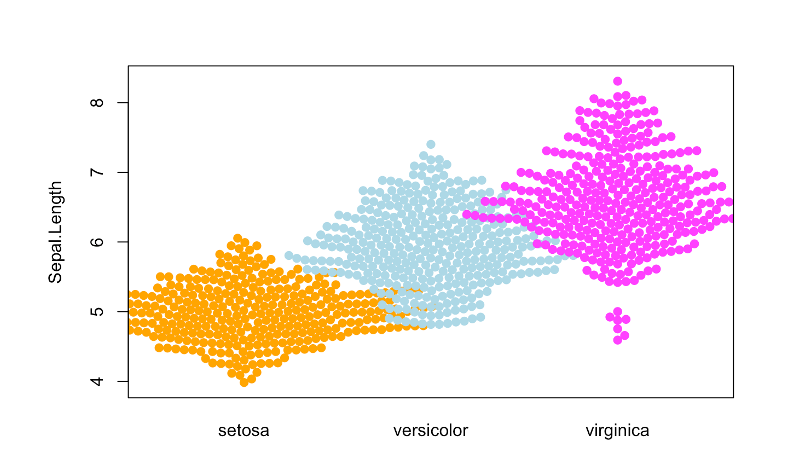
Setup
System Requirements: Cross-platform (Linux/MacOS/Windows)
Programming Language: R
Dependencies:
readr,beeswarm,ggbeeswarm,ggsignif,plyr,tidyverse
Data Preparation
We used the built-in R dataset (iris), along with the TCGA.LIHC.clinicalMatrix and TCGA-LIHC.star_fpkm datasets from UCSC Xena DATASETS. Selected genes were chosen for demonstration purposes.
# Load iris dataset
data("iris")
# Load the TCGA-LIHC gene expression dataset from a processed CSV file
TCGA_gene_expression <- read.csv("files/TCGA-LIHC.star_fpkm_processed.csv")
# Load the TCGA-LIHC clinical info dataset
TCGA_clinic <- read.csv("files/TCGA.LIHC.clinicalMatrix.csv") %>%
mutate(T = as.factor(T))
#Prepare Statistics data
data_summary <- function(data, varname, groupnames) {
summary_func <- function(x, col) {
c(mean = mean(x[[col]], na.rm = TRUE),
sd = sd(x[[col]], na.rm = TRUE))
}
data_sum <- ddply(data, groupnames, .fun = summary_func, varname)
data_sum <- rename_with(data_sum, ~ varname, "mean")
return(data_sum)
}
iris_sum <- data_summary(iris, varname="Sepal.Length", groupnames="Species")
TCGA_gene_sum <- data_summary(TCGA_gene_expression, varname="gene_expression", groupnames="sample")Visualization
1. Basic Beeswarm Plot (beeswarm package)
Figure 1 illustrates the distribution of the Sepal.Length variable in the iris dataset.
p1 <- beeswarm(iris$Sepal.Length)
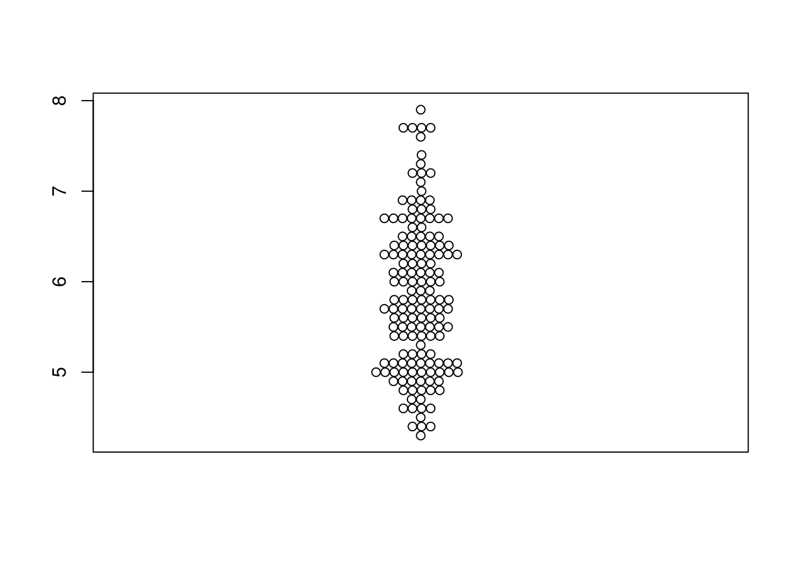
Figure 2 illustrates the distribution of the expression levels of the RAB4B gene in the LICH database.
TCGA_gene_expression_RAB4B <- subset(TCGA_gene_expression, sample == "RAB4B")
p1_2 <- beeswarm(TCGA_gene_expression_RAB4B$gene_expression)
2. Flipping the Beeswarm Plot (beeswarm package)
Figure 3 illustrates the distribution of the OS.time variable in TCGA dataset.
p2 <- beeswarm(TCGA_clinic$OS.time, horizontal=TRUE)
3. Changing Basic Features of the Beeswarm Plot (beeswarm package)
Tip
Key Parameters:
(1) Color
By modifying the col parameter, we can change the color of the points.
(2) the Symbol of Points
The pch parameter allows the symbol of the points to be changed.
(3) the Size of Points
The cex parameter allows the size of the points to be changed.
(4) the Position of Points
The method parameter allows the position of the points to be changed. The available options are:
swarm(default): Points are randomly placed but do not overlap.center: Points are symmetrically distributed around the center of the chart.hex: Points are placed on a hexagonal grid.square: Points are located on a square grid.
Figure 4 illustrates the distribution of the Sepal.Length variable in the iris dataset.
p3_1 <- beeswarm(iris$Sepal.Length,col= "blue",pch=16,
cex=1.5,method="center" )
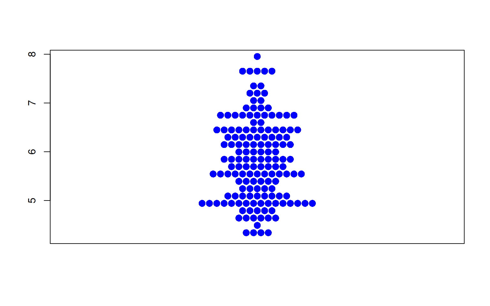
Figure 5 illustrates the distribution of the OS.time variable in TCGA dataset.
p3_2 <- beeswarm(TCGA_clinic$OS.time,col= "blue",pch=16,
cex=1.5,method="center" )
4. Grouping (beeswarm package)
Using the ~ operator, we can easily create a grouped bee swarm plot.
Figure 6 illustrates the distribution of the Sepal.Length variable across different Species.
p4_1 <- beeswarm( Sepal.Length ~ Species, data=iris,
col=c("orange", "lightblue", "magenta"), pch =19)
Figure 7 illustrates the distribution of the OS.time variable across different tumor stages.
p4_2 <- beeswarm(OS.time ~ T, data=TCGA_clinic,
col=c("orange", "lightblue", "magenta"), pch =19)
5. Custom Position Behavior (beeswarm package)
Tip
When there are many data points, changing the position behavior of the points can prevent overlap between groups.
The available options are:
none(default): No correction is applied.gutter: Sets higher and lower limits for each group.wrap: Similar togutter, but adds random noise to the position of the points.random: Randomly positions the points.omit: Omits overlapping points.
Figure 8 illustrates the distribution of the Sepal.Length variable across different Species.
p5_1 <- beeswarm( Sepal.Length ~ Species, data=iris,
col=c("orange", "lightblue", "magenta"), pch =19,corral ="gutter")
Figure 9 illustrates the distribution of the OS.time variable across different tumor stages.
p5_2 <- beeswarm( OS.time ~ T, data=TCGA_clinic,
col=c("orange", "lightblue", "magenta"), pch =15,corral = "gutter")
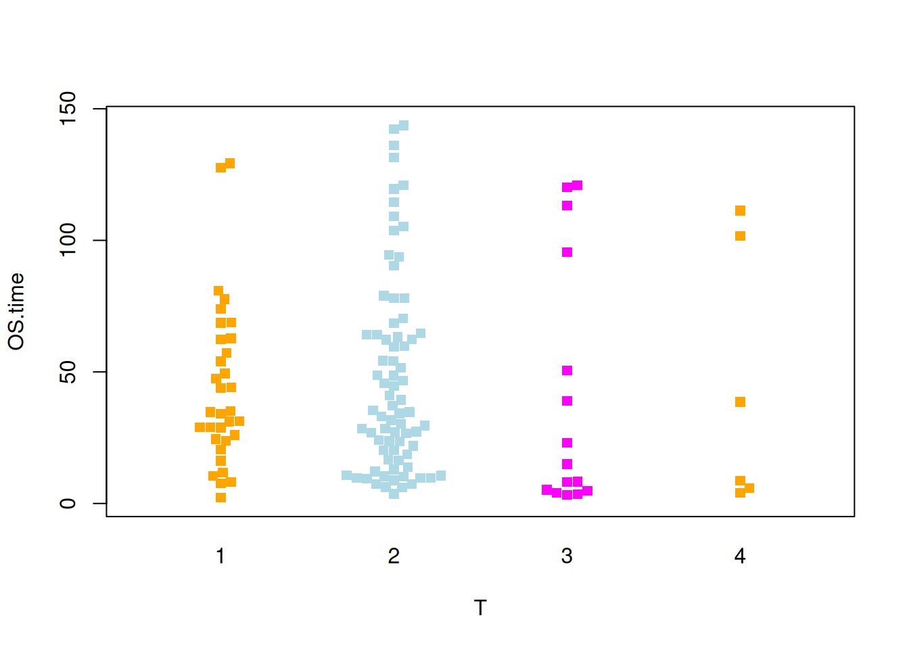
6. Basic Beeswarm (ggbeeswarm package)
Figure 10 illustrates the distribution of the Sepal.Length variable in the iris dataset.
p6_1 <- ggplot(iris,aes(y=Sepal.Length,x='')) +
geom_beeswarm()
p6_1
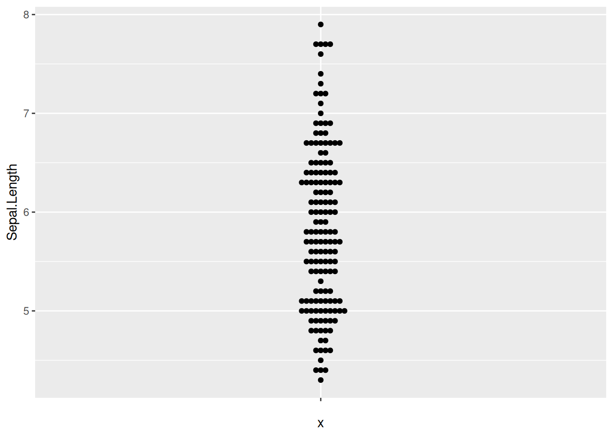
Figure 11 illustrates the distribution of the OS.time variable in TCGA dataset.
p6_2 <- ggplot(TCGA_clinic,aes(y=OS.time,x='')) +
geom_beeswarm()
p6_2
7. Flipping the Beeswarm Plot (ggbeeswarm package)
Figure 12 illustrates the distribution of the Sepal.Length variable in the iris dataset.
p7_1 <- ggplot(iris,aes(x=Sepal.Length,y='')) +
geom_beeswarm()
p7_1
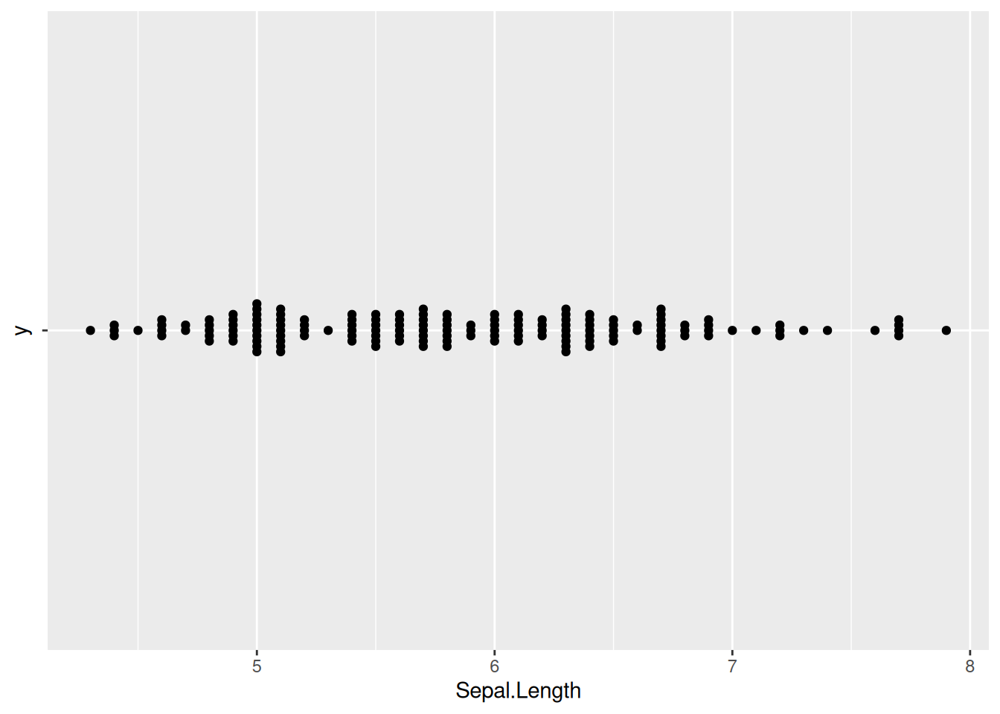
Figure 13 illustrates the distribution of the OS.time variable in TCGA dataset.
p7_2 <- ggplot(TCGA_clinic,aes(x=OS.time,y='')) +
geom_beeswarm()
p7_2
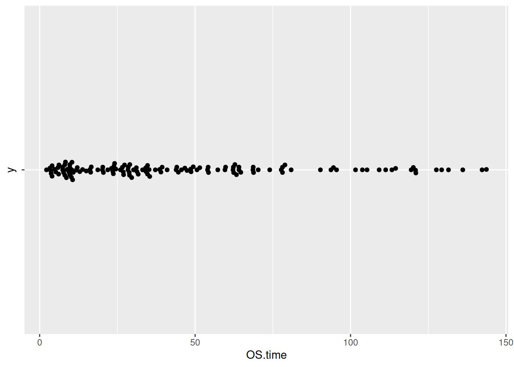
8. Customization of the Beeswarm Plot (ggbeeswarm package)
Tip
Key Parameters:
We can use the theme() function to change the color of the points and the overall theme of the chart.
Figure 14 illustrates the distribution of the Sepal.Length variable in the iris dataset.
p8_1 <- ggplot(iris,aes(y=Sepal.Length,x='')) +
geom_beeswarm(color='blue') +
theme_minimal()
p8_1
Figure 15 illustrates the distribution of the OS.time variable in TCGA dataset.
p8_2 <- ggplot(TCGA_clinic,aes(y=OS.time,x='')) +
geom_beeswarm(color='blue') +
theme_minimal()
p8_2
9. Changing the Position of Points (ggbeeswarm package)
By default, the geom_beeswarm() function uses the swarm method to position the points. We can change this behavior using the method parameter. The available options are:
swarm: The default method.compactswarm: Similar to swarm, but the points are more compact.center: Points are centered on the x-axis.hex: Points are located within hexagons.square: Points are located within squares.
Figure 16 illustrates the distribution of the Sepal.Length variable across different Species.
p9_1 <- ggplot(iris,aes(y=Sepal.Length,x='')) +
geom_beeswarm(method='center')
p9_1
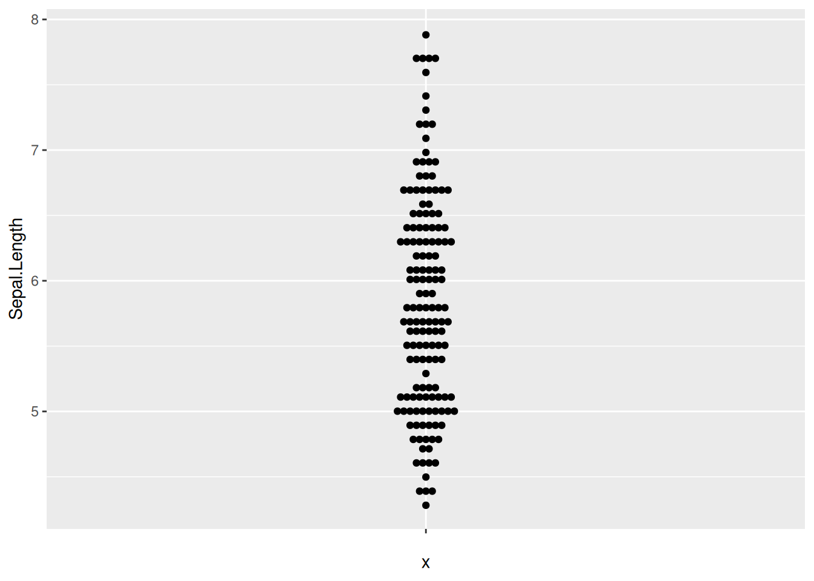
10. Customizing the Color of Points (ggbeeswarm package)
We can also use the scale_color_manual() function to customize the colors. Additionally, the theme_minimal() function can make the chart look more elegant.
Figure 17 illustrates the distribution of the OS.time variable across different tumor stages.
p10_1 <- ggplot(TCGA_clinic,aes(x=T, y=OS.time, colour=T)) +
geom_beeswarm() +
scale_color_manual(values=c("#999999", "#E69F00", "#56B4E9","blue")) +
theme_minimal()
p10_1
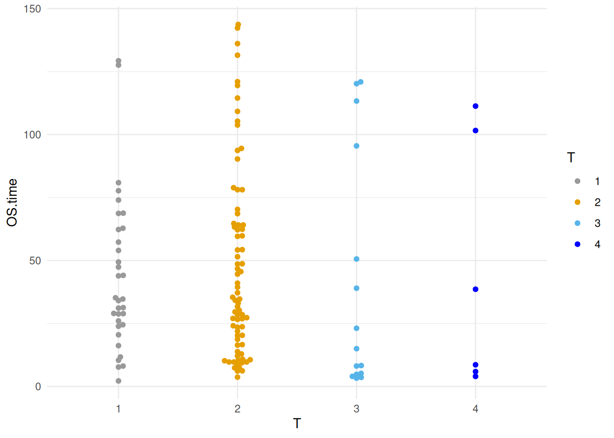
11. Grouping and Adding Statistical Analysis (ggbeeswarm package)
Figure 18 illustrates the distribution of the Sepal.Length variable in the iris dataset.
p11_1 <- ggplot()+
geom_bar(iris_sum,
mapping=aes(x=Species,y=Sepal.Length,fill=Species),
stat="identity",width=.6,
alpha=0.5,position=position_dodge())+
geom_errorbar(iris_sum,
mapping=aes(x=Species,y=Sepal.Length,
ymin=Sepal.Length-sd,
ymax=Sepal.Length+sd),
width=.4,position=position_dodge(.8))+
geom_beeswarm(iris,
mapping=aes(x=Species,y=Sepal.Length,fill=Species),
shape=21,color='black',size=3.5,cex=1.2,stroke=0.6)+
geom_signif(iris,
mapping=aes(x=Species,y=Sepal.Length),
comparisons=list(c("setosa","versicolor"),c("setosa","virginica")),
test="t.test",step_increase=0.2,tip_length=0,textsize=6,size=1,
map_signif_level=T)
p11_1
Figure 19 illustrates the gene expression data of three genes in liver cancer.
p11_2 <- ggplot()+
geom_bar(TCGA_gene_sum,
mapping=aes(x=sample,y=gene_expression,fill=sample),
stat="identity",width=.6,alpha=0.5,position=position_dodge())+
geom_errorbar(TCGA_gene_sum,
mapping=aes(x=sample,y=gene_expression,
ymin=gene_expression-sd,ymax=gene_expression+sd),
width=.4,position=position_dodge(.8))+
geom_beeswarm(TCGA_gene_expression,
mapping=aes(x=sample,y=gene_expression,fill=sample),
shape=21,color='black',size=3.5,cex=1.2,stroke=0.6)+
geom_signif(TCGA_gene_expression,
mapping=aes(x=sample,y=gene_expression),
comparisons=list(c("RAB4B","TIGAR"),c("RAB4B","RNF44"),c("TIGAR","RNF44")),
test="t.test",step_increase=0.2, tip_length=0,textsize=6,
size=1,map_signif_level=T)
p11_2
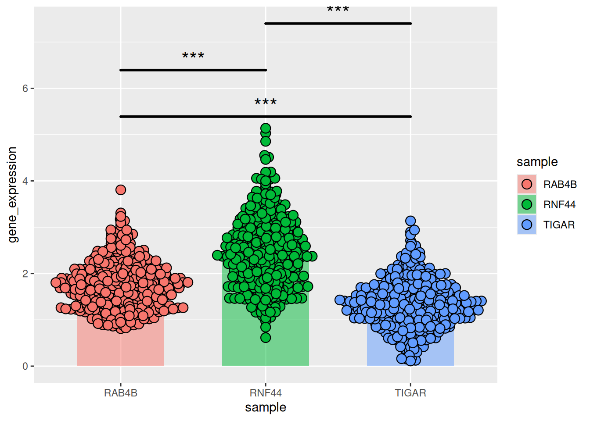
Applications
1. Display Cell Density

The beeswarm plot shows the density of CD8+T cells in tumors with high or low FOLR2+cell density.[1]
2.Displaying Gene Expression Data Across Different Samples
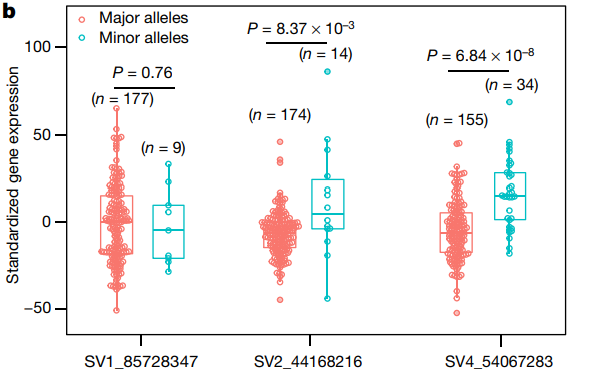
The beeswarm plot shows the distribution of gene expression levels at different structural variation (SV) sites.[2]
Reference
1.Nalio Ramos R,Missolo-Koussou Y,Gerber-Ferder Y, et al. Tissue-resident FOLR2 + macrophages associate with CD8 + T cell infiltration in human breast cancer. Cell. 2022;185 (7):1189-1207.e25. doi:10.1016/j.cell.2022.02.021
2.Zhou Y,Zhang Z,Bao Z, et al. Graph pangenome captures missing heritability and empowers tomato breeding. Nature. 2022;606 (7914):527-534. doi:10.1038/s41586-022-04808-9
3.Wickham, H. (2009). ggplot2: Elegant Graphics for Data Analysis. Springer-Verlag New York. ISBN 978-0-387-98140-6 (Print) 978-0-387-98141-3 (E-Book). [DOI: 10.1007/978-0-387-98141-3] (https://doi.org/10.1007/978-0-387-98141-3)
4.Erik Clarke, Scott Sherrill-Mix, Charlotte Dawson (2023). ggbeeswarm: Categorical Scatter (Violin Point) Plots. R package version 0.7.2. https://CRAN.R-project.org/package=ggbeeswarm
5.Aron Eklund, James Trimble (2021). beeswarm: The Bee Swarm Plot, an Alternative to Stripchart. R package version 0.4.0. https://CRAN.R-project.org/package=beeswarm
6.Wickham, H. (2017). dplyr: A Grammar of Data Manipulation (Version 0.7.4). Retrieved from https://CRAN.R-project.org/package=dplyr
7.Huber, W., Carey, V. J., Gentleman, R., Anders, S., & Carlson, M. (2015). Bioconductor: Support for the analysis and comprehension of high-throughput genomic data. R package version 3.2. F1000Research, 4, 1-22. Retrieved from https://www.bioconductor.org/ 54^
8.The R Graph Gallery – Help and inspiration for R charts (r-graph-gallery.com)